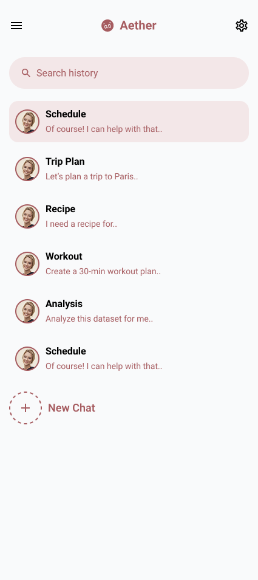

PROJECT OVERVIEW
- Project Name: Aether ChatBot Mobile App
- Designer: Janani Vijay
- Project Type: Mobile AI chatbot app (white-label solution)
- Project Duration: 4 Weeks
- Tools Used: Figma
- Objective: Build a scalable chatbot app that organizations can rebrand instantly, while
ensuring a modern, intuitive, and accessible user experience.
PROBLEM STATEMENT
Many chatbot apps suffer from cluttered interfaces, lengthy onboarding, and poor adaptability for
businesses. The challenge was to create a solution that is easy for users, while also being
flexible enough for organizations to customize and deploy quickly under their own brand.
GOALS
- Reduce onboarding friction with quick login options
- Design a clean, conversational UI that feels natural
- Enable branding and customization for organizations
- Ensure accessibility with dark mode and high-contrast UI
- Lay a foundation for advanced features like voice input and integrations
TARGET USERS
- General users needing AI assistance (scheduling, planning, queries)
- Organizations seeking a ready-to-launch chatbot app
- Age group: 18–45
- Preference for dark theme and mobile-first design

DESIGN PROCESS
Step 1: Research – Surveys, interviews, and competitive analysis (ChatGPT, Replika, My AI).
Step 2: User Flow – Simplified onboarding, chat history, and settings customization.
Step 3: Wireframes – Focused on minimal navigation and conversation-first layouts.
Step 4: UI Design – Dark theme with red accents, clean typography, modern interaction patterns.
SCREENS DESIGNED
- Splash / Get Started Screen
- Login / Signup (with Google)
- Main Chat Interface
- Chat History Management
- Profile & Settings
- Branding Customization
KEY FEATURES
- Seamless onboarding with Google login
- Customizable branding for organizations
- Searchable chat history & quick-start new chats
- Accessibility-first design (dark mode, scalable fonts, voice hints)
CHALLENGES & SOLUTIONS
- Challenge: Balancing minimalism with functionality.
Solution: Collapsible menus and gesture-based navigation.
- Challenge: Cross-device consistency.
Solution: Applied Material & Human Interface Guidelines across devices.
- Challenge: Making prototype feel realistic.
Solution: Simulated AI responses and dynamic toggles in Figma.
RESULTS
Usability tests with 15 participants showed 85% satisfaction.
Onboarding time reduced by 40% vs competitors.
Organizations valued the white-label flexibility, cutting time-to-market significantly.
LEARNINGS
- Customization is a key selling point for businesses
- Minimalism improves usability and adoption
- User research helps balance end-user needs with organizational goals